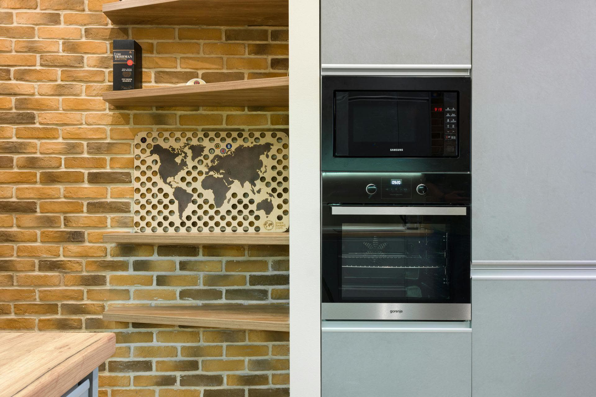

0
Лет опыта
Работаем с бытовыми категориями ежедневно по Москве и МО.

Берём не массовые дешёвые микроволновки, а экономически осмысленный ремонт: встраиваемые СВЧ, дорогие кухни, премиальные бренды и случаи, где замена техники дороже нормального восстановления.
7-15 тыс.
типичный чек сложной встройки
до работ
согласуем смету и смысл ремонта
Neff/Miele
фокус на дорогих брендах
Фильтр заявок
Берём
встроенные модели: Neff, Miele, Bosch, Siemens, Smeg, Gaggenau, дорогие кухни и сложные электронные поломки.
Не продвигаем
обычные настольные СВЧ, тарелки, слюду, лампочки, дешёвые модели и запросы “как починить самому”.
Если ремонт по факту невыгоден, скажем это до начала работ. Это экономит время клиента и рекламный бюджет.
Фиксируем понятные метрики сервиса, чтобы решение о ремонте принималось по фактам, а не по обещаниям.
0
Лет опыта
Работаем с бытовыми категориями ежедневно по Москве и МО.
0
Ремонтов
Закрытые заявки по домашней технике в рабочем контуре сервиса.
0
За 1 визит
Типовой кейс закрываем без повторного выезда.
0
Гарантия
Подтверждаем результат актом и гарантийной фиксацией.
Обычная СВЧ часто дешевле меняется, чем чинится. Поэтому посадочная сразу отсеивает слабую экономику и собирает заявки, где клиенту важны кухня, бренд, ниша, дизайн и аккуратный демонтаж.
Ремонт имеет смысл, когда СВЧ встроена в кухню и простая замена тянет за собой демонтаж, подбор размера и фасадные риски.
Neff, Miele, Bosch, Siemens, Smeg и Gaggenau дают нормальный средний чек и лучше совпадают с платёжеспособной аудиторией.
Не продаём “ремонт от 500 ₽”. Сначала причина, доступность деталей и целесообразность, потом понятное решение.
Ключевые симптомы собраны вокруг дорогой встройки и сложных узлов. Дешёвые расходники и “починить самому” сознательно не подсвечиваем.
Высоковольтная часть, питание, концевики, плата или магнетрон. По телефону уточняем бренд и формат встройки.
Останавливаем использование, чтобы не добить камеру и высоковольтный узел. Смотрим, не ушёл ли ремонт в невыгодный сценарий.
Сенсорная панель, блок управления, питание, шлейфы. Особенно актуально для Neff, Bosch, Siemens и Miele.
Проверяем замки, микропереключатели и посадку в нише. Важна аккуратность, чтобы не повредить фасад кухни.
Для обычной микроволновки ремонт за 5-7 тыс. рублей часто спорный. Для встроенной premium-СВЧ это может быть разумно, потому что новая техника, размер ниши и кухня стоят намного дороже.
В объявлениях и ключах используем встроенную СВЧ плюс бренд. Так мы не конкурируем за дешёвые запросы “ремонт микроволновки рядом”.
Это снижает долю звонков “сколько стоит самая дешёвая починка” и помогает рекламе обучаться на более дорогих обращениях.
Не ведём трафик
тарелка, слюда, лампочка, кнопка, предохранитель, “магнетрон купить”, “своими руками”.
Усиливаем трафик
“встроенная СВЧ”, “Neff не греет”, “Miele ошибка”, “Bosch/Siemens встроенная микроволновка”.
Как рекламный фокус нет: чаще всего ремонт обычной СВЧ экономически слабый. В работу берём случаи, где ремонт разумен, прежде всего встроенные модели и дорогие бренды.
Нет. Причина может быть в высоковольтной части, плате управления, дверных концевиках, питании или самом магнетроне. Сначала диагностируем, потом называем смету.
Да, но лучше заранее сообщить модель, тип фасада и что стоит рядом. Мастер подготовится к аккуратному демонтажу без повреждения кухни.
Neff, Miele, Bosch, Siemens, Smeg, Gaggenau и другая премиальная встройка. Там замена техники и подгонка кухни обычно дороже ремонта.
Да. Если стоимость ремонта приближается к разумной замене техники, не тянем клиента в ремонт любой ценой и проговариваем это до начала работ.
Если это обычная недорогая микроволновка, честно скажем, когда ремонт не имеет смысла. Если это встройка в дорогой кухне, подготовим мастера под модель и симптом.
Свяжемся, уточним модель и заранее отфильтруем случаи, где ремонт экономически невыгоден.
На бытовой заявке важнее не красивые обещания, а прозрачный порядок: причина поломки, стоимость, решение по ремонту и документы после работ.
0₽
Диагностика при ремонте
До старта работ
Согласование цены
12 мес
Акт и гарантия
По телефону можно только сориентировать по симптомам. Нормальная цена появляется после осмотра техники, когда уже понятны причина, объём работ и целесообразность ремонта.
Симптом
Начинаем с того, что видите вы
Диагноз
Потом мастер видит причину
Решение
Только после этого называем стоимость
Нормальный выездной сервис должен снижать тревогу ещё до ремонта: причина понятна, цена согласована, а невыгодный сценарий не скрывают.
Не называем цену наугад и не торопим с согласием. Сначала мастер понимает, где именно проблема и что реально нужно делать.
После диагностики сразу называем цену и только потом начинаем ремонт. Без сюрпризов после разборки техники.
Когда вложения в старую технику уже неразумны, не вытягиваем деньги из клиента и не изображаем «обязательный» ремонт.
После ремонта проверяем технику при клиенте и фиксируем результат документами, а не устными обещаниями.
Большая часть тревоги в бытовой заявке возникает не из-за самой техники, а из-за неизвестности: сколько выйдет, нужно ли везти технику, кто отвечает за результат и что делать, если ремонт невыгоден.
Один симптом может означать разную поломку. По телефону честнее назвать диапазон, а точную стоимость назвать после осмотра.
Если ремонт можно сделать на дому, закрываем заявку у клиента. Если нет, заранее объясняем причину и что меняется по срокам.
Мастер прямо скажет, когда вложения в старую технику уже неразумны. Это нормальная часть консультации, а не повод тянуть клиента в ремонт любой ценой.
Ниже ближайшие бытовые категории, которые чаще всего смотрят рядом с этой страницей.